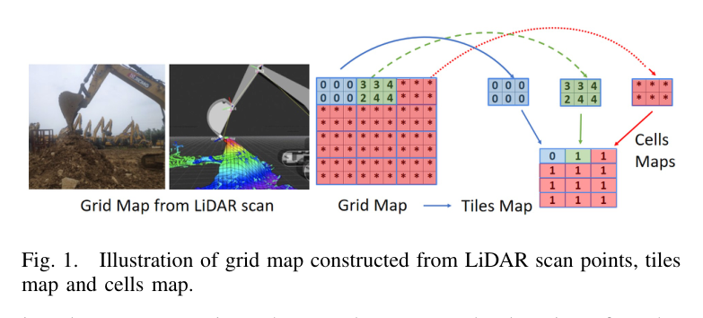
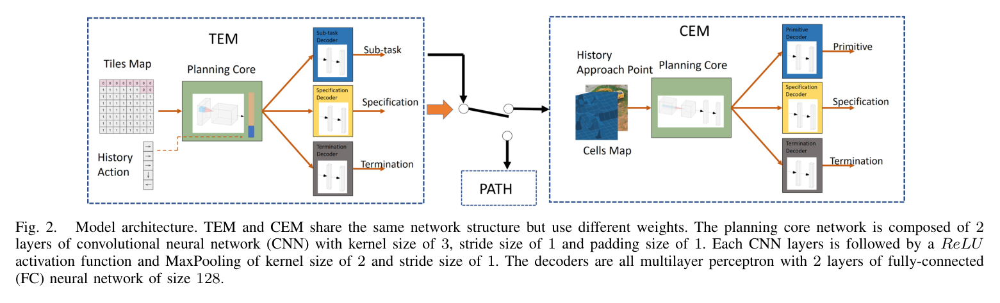
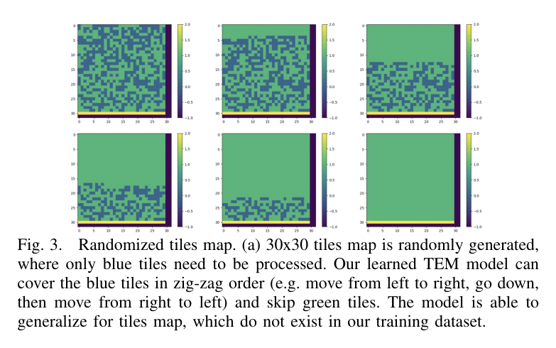
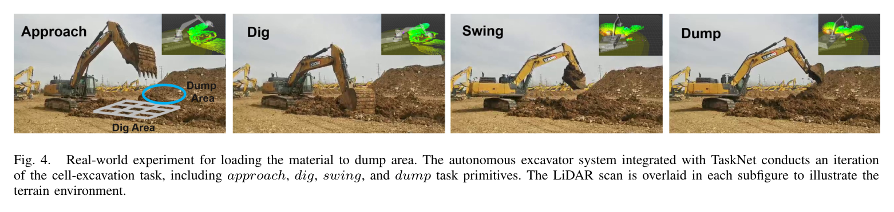
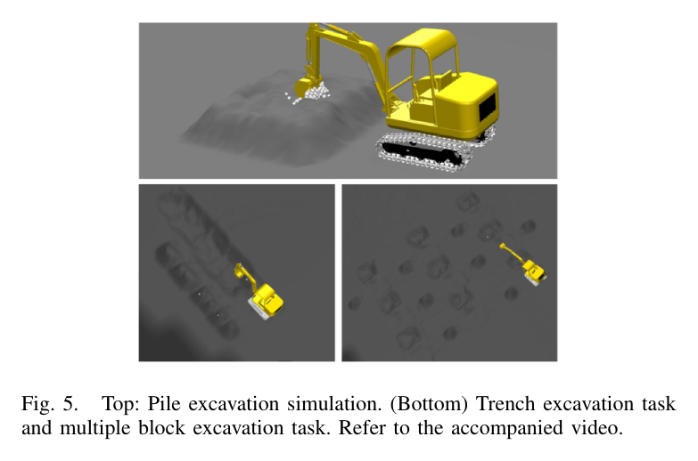
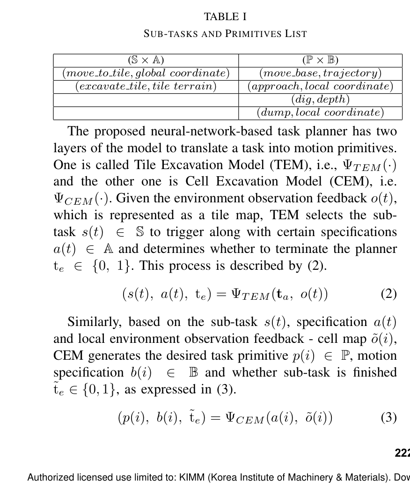
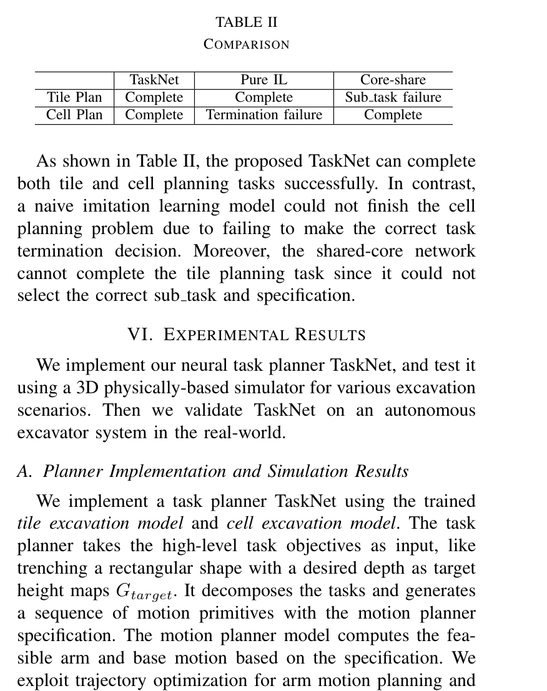

TEM-CEM 이중 시간척도
TEM은 넓은 현장을 정차·도달영역 단위로, CEM은 한 정차점의 버킷 cell·깊이 단위로 계획한다. 베이스 이동 최소화와 국소 최대 굴착의 전략이 달라 core 가중치를 공유하지 않으며, 공유-core baseline의 tile sub-task 실패가 이를 뒷받침한다.
- TEM: move/excavate
- CEM: approach/dig
- PATH: move_base
- 상·하위 종료 별도 예측
TaskNet: A Neural Task Planner for Autonomous Excavator
자율굴착은 한 번의 버킷 궤적뿐 아니라 차체를 어느 위치로 옮길지, 각 위치에서 어느 영역을 얼마나 깊게 굴착할지, 언제 다음 영역으로 넘어갈지를 긴 시퀀스로 정해야 한다. 이산 작업결정과 연속 충돌회피 운동을 동시에 탐색하면 공간이 커지고, 장비 도달범위를 지키면서 베이스 이동을 줄이는 전략까지 수작업으로 설계해야 한다.
기존 FSM·스크립트는 작업과 지형이 바뀔 때 규칙을 다시 작성해야 한다. TaskNet은 목표와 현재 LiDAR 높이의 차를 도달영역 단위 tile map과 버킷 폭 단위 cell map으로 나눈다. TEM은 move_to_tile/excavate_tile을, CEM은 approach/dig와 위치·깊이·종료를 예측한다. 출력은 기존 차체 경로·팔 궤적계획기로 전달되어 학습기는 계층적 작업분해에 집중한다.

현재 높이 G와 목표 G_target의 차이가 모든 셀에서 epsilon 이내면 완료다. 원 격자를 굴착기 한 정차점의 도달영역 크기로 downsample해 binary G_tile을 만들고, 선택 tile에서는 버킷 폭 해상도의 G_cell을 자른다. 이 계층은 상위 이동과 하위 굴착이 필요한 공간 해상도를 분리한다.
TEM은 tile map과 최근 sub-task 이력으로 move_to_tile/excavate_tile, 방향·지역 사양과 전체 종료를 출력한다. 이동이면 PATH가 move_base 경로를 만들고, 굴착이면 CEM이 local cell map과 직전 approach에서 approach/dig, 좌표·깊이, 지역 종료를 예측한다. 두 모델은 CNN 2층과 출력별 FC decoder를 갖고 세 cross-entropy의 가중합으로 학습하되 core 가중치는 공유하지 않는다.
LiDAR 현재 높이와 목표 높이의 차를 만들고 모든 셀이 epsilon 이내인지 검사한다.
도달영역 크기의 G_tile과 버킷 폭 크기의 G_cell로 상·하위 입력을 분리한다.
tile map과 이동 이력에서 move/excavate, 사양, 전체 종료를 출력한다.
이동방향을 세계좌표로 바꾸고 grid search로 move_base 경로를 만든다.
local map과 직전 approach에서 approach/dig, 좌표·깊이, 지역 종료를 출력한다.
primitive 사양을 팔 trajectory optimization과 차체 경로계획기에 전달한다.
실행 후 cell·tile map을 갱신해 전체 작업 완료까지 재귀 반복한다.
TEM 순회·건너뛰기와 CEM 최고 cell 우선 규칙으로 대규모 trace를 만든다.
인간 운전 trace로 49톤 굴착기 시험 전 모델을 fine-tune한다.
|G(p,q)-G_{target}(p,q)|<\epsilon,\ \forall p,qPDF p.2. 모든 셀의 현재-목표 높이차가 허용오차 안이면 완료다.
(s^{(t)},a^{(t)},t_e)=\Psi_{TEM}(t_a,o^{(t)})PDF p.3. 작업과 tile 관측에서 sub-task·사양·전체 종료를 낸다.
(p^{(i)},b^{(i)},\tilde t_e)=\Psi_{CEM}(a^{(i)},\tilde o^{(i)})PDF p.3. 지역 관측에서 primitive·사양·지역 종료를 낸다.
(p^{(i)},b^{(i)},\tilde t_e)=\Psi_{PATH}(a^{(i)},\tilde o^{(i)})PDF p.3. move_to_tile 사양을 move_base 경로로 바꾼다.
x=f_{core}(u),\ y_1=f_x(x),\ y_2=f_{spec}(x),\ y_3=f_{term}(x)PDF p.3. core 특징을 행동·사양·종료 decoder가 각각 해석한다.
u^{(t)}=(G_{tile}^{(t)},(s^{(t)},s^{(t-1)},\ldots,s^{(t-k)}))PDF p.4. tile map과 최근 처리 이력을 함께 사용한다.
u^{(i)}=(G_{cell}^{(i)},b^{(i-1)})\in\mathbb{R}^{h\times w\times2}PDF p.4. local map과 직전 approach를 두 채널로 결합한다.
L=\sum \alpha L_p(y_1,\hat y_1)+\beta L_b(y_2,\hat y_2)+\gamma L_t(y_3,\hat y_3)PDF p.4. 행동·사양·종료 cross-entropy의 가중합이다.

TEM은 넓은 현장을 정차·도달영역 단위로, CEM은 한 정차점의 버킷 cell·깊이 단위로 계획한다. 베이스 이동 최소화와 국소 최대 굴착의 전략이 달라 core 가중치를 공유하지 않으며, 공유-core baseline의 tile sub-task 실패가 이를 뒷받침한다.
TaskNet은 현재-목표 높이차를 공통 표현으로 쓴다. tile은 처리 여부를 압축하고 cell은 버킷 굴착 위치를 보존한다. 출력이 class에 그치지 않고 방향·국소좌표·깊이를 포함하므로 기존 모션플래너가 연속 궤적을 계산할 수 있다.
TEM은 순회·비작업 tile 건너뛰기, CEM은 최고 cell 우선 규칙으로 대량 trace를 얻는다. 실제 백만 단위 label 수집을 피하지만 합성 규칙이 전략을 선결정할 수 있어, 저자들은 인간 운전 trace로 실차 전 fine-tuning했다.



TaskNet은 Table II의 tile·cell plan을 모두 완료했다. Pure IL은 cell 종료를 못했고, core-share는 tile sub-task 선택에 실패했다. TEM은 학습에 없던 무작위 30×30 사례에서 필요한 tile을 zig-zag로 덮고 비작업 tile을 건너뛰었다. 3.5톤 simulation의 pile·trench·multiple-block도 폐루프로 수행했지만 성공률이나 목표형상 오차는 수치로 보고하지 않았다.
49톤 실차에서 다음 primitive·사양 추론은 1초 미만, approach는 약 2초, dig·swing·dump 합계는 약 22초였다. 54회 적재의 자율 효율은 356.8 m³/h, 인간은 396.5 m³/h였다. 자율 처리량은 인간의 약 90%이나 TaskNet 단독 효과가 아니라 모션플래너·제어기와 현장조건을 포함한 통합 시스템 성과다.
| 평가 항목 | 정량 결과 | 조건·맥락 | 원문 근거 |
|---|---|---|---|
| TEM 학습 규모 | 3,000 maps, 1,126,900 samples | 최대 32×32 tile map | PDF p.5 |
| CEM 학습 규모 | 10,000 sequences | 최대 6×6, batch 1,000, learning rate 1e-3 | PDF p.5 |
| TaskNet 계획 완료 | Tile Complete / Cell Complete | Table II | PDF p.5 |
| Pure IL 실패 | Cell termination failure | Tile plan은 Complete | PDF p.5 |
| Core-share 실패 | Tile sub-task failure | Cell plan은 Complete | PDF p.5 |
| 시뮬레이터 장비 | 3.5 t | boom 2.00 m, stick 1.05 m, bucket 0.60 m, base height 0.35 m | PDF p.6 |
| TaskNet 추론시간 | <1 s | 실차에서 다음 primitive와 specification 예측 | PDF p.6 |
| Primitive 실행시간 | approach 약 2 s; dig+swing+dump 약 22 s | 49톤 실차 작업 cycle | PDF p.6 |
| 실차 반복 횟수 | 54 iterations | 자율·인간 효율 비교 | PDF p.6 |
| 자율 적재 효율 | 356.8 m³/h | 49톤 자율굴착기 | PDF p.6 |
| 인간 적재 효율 | 396.5 m³/h | 동일 작업 비교 | PDF p.6 |
높이차를 tile·cell로 나누고 TEM·CEM이 sub-task·primitive·사양·종료를 시연학습해 기존 모션플래너로 넘긴다.
TaskNet만 두 계획시험을 모두 완료했고, 49톤 굴착기 54회에서 356.8 m³/h로 인간 396.5 m³/h에 근접했다.
합성 규칙 의존, 물성·힘 정보 부재, 단일 실차 현장과 완료 중심 평가로 OOD 일반화·안전성은 미확인이다.
TaskNet은 규칙형 AES의 작업분해를 데이터 기반으로 바꾸면서 검증된 모션플래너를 유지한다. rank 40의 버킷 적재 체적을 CEM 종료와 다음 dig 깊이에 되먹이면 최고 cell 규칙을 실제 충전효율로 교정할 수 있다. 주행성 지도는 위험 tile을 막고, rank 42 안전감시는 장비 침입 때 primitive를 pause한 뒤 관측 갱신·재계획을 유도할 수 있다.
본문 핵심 위치에 배치하지 않은 원문 Figure와 Table을 원문 페이지 순서로 수록한다.

